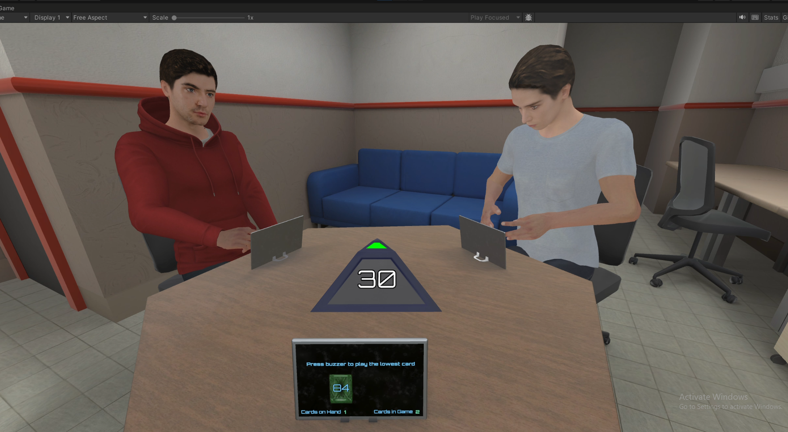
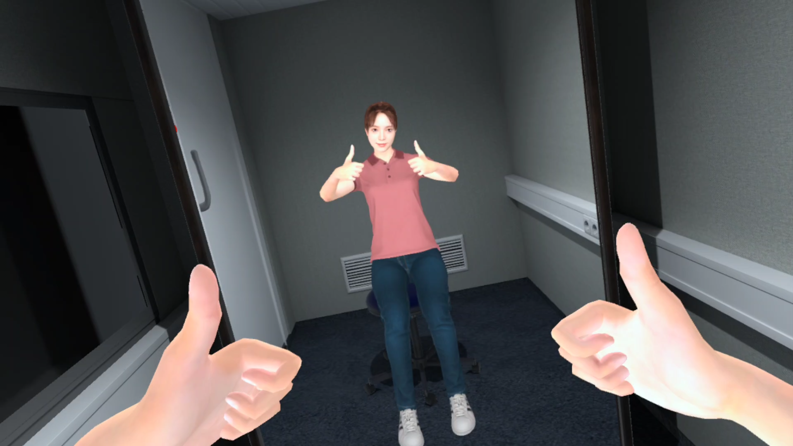
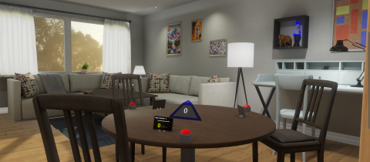
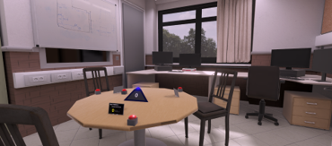
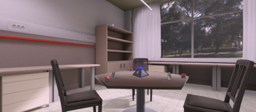

Interactive overview of ongoing and recent work across VR/XR and EEG-based studies.
Filter
Browse by modality
2024 – Present · EventLab
Neobic-XR: Exercise for Oncological Patients
VR environment designed to improve the mental and physical wellbeing of oncological patients and reduce
drop-off in exercise routines. Includes personalised avatars for the experimental group and investigates the
impact of observing one’s own avatar demonstrating exercises before performing them.
Starting the Pilot Study
2024 – Present · EventLab
YoungFit – Qigong
XR experience where an instructor teaches and assists the user in performing traditional Qigong postures.
XR is used to let participants see themselves while exercising, while the real environment is ambiented with
Chinese-inspired elements to enhance focus and atmosphere.
Development
2024 – Present · EventLab
YoungFit – Mindfulness
Development of 10 hours of immersive mindfulness sessions in Virtual Reality, combining guided audio with
custom-crafted cinematics designed directly from the instructor’s verbal cues (non-AI).
Development
2024 – Present · EventLab
VR Traffic Simulation for Social Awareness
VR traffic simulation promoting social awareness and studying user behaviour in controlled scenarios.
Collaboration with the Catalan Traffic Department. Participants embody a traffic-accident victim, reflecting the
philosophical golden rule: “Do not do to others what you would not want them to do to you.” Pilot results show
~95% probability that the experimental group intervenes more than controls.
Collecting Data
2023 – Present · EventLab
XR/2D Study to Support Content Moderators
XR/2D study aimed at reducing distress in content moderators through immersive and desktop interventions.
Includes optional EEG measurements and integrates LSL. Features an intelligent virtual counselor powered by
ChatGPT + ElevenLabs (≈5s latency).
Collecting Data
2023 – Present · EventLab
XR/2D Study to Support Content Moderators (EEG Analysis)
EEG-enabled branch of the content moderator study, exploring neural markers of stress reduction and cognitive
load. Uses Lab Streaming Layer for synchronisation alongside the intelligent virtual counselor.
Collecting Data
2023 – Present · EventLab
PRESENCE – EEG Hyperscanning for Co-Presence
Multiplayer VR experience inspired by The Mind, used to study co-presence and interpersonal synchrony through
EEG hyperscanning. Players collaborate without speech, guided only by gaze and subtle movement, while each
sees others inside personalised VR scenarios.





Analyzing Eye-Tracking & BehaviourDevelopment for EEG
2024 – Present · EventLab
Predicted Time OpenXR Exposure Plugin
Unity plugin exposing OpenXR’s predicted display time for precise alignment between Unity events and LSL
triggers, improving timestamp reliability without external photodiodes.